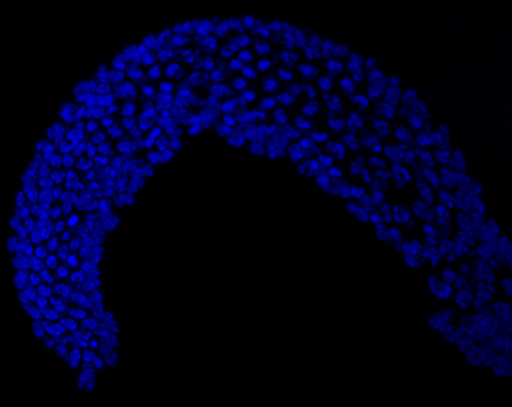
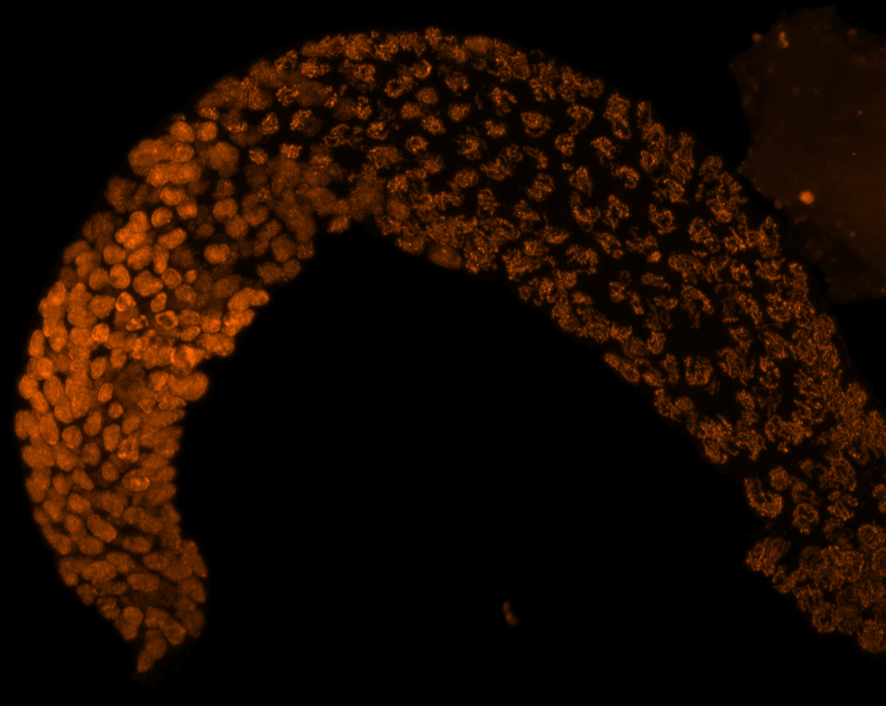
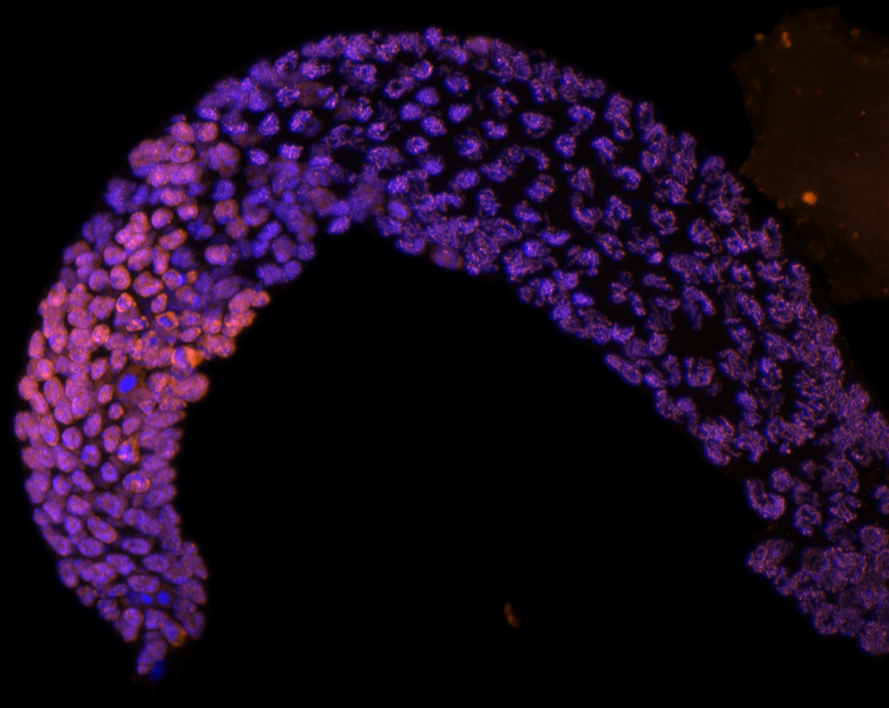

Photos
A few things I like to point a lens at.
Microscopy

A dissected C. elegans germline. DAPI stains the DNA (blue); an antibody stain is against REC-8, a protein that helps build the meiotic chromosome axis (orange). I think these look pretty cool even outside of the science.

Same germline, REC-8 channel alone.

And the merge of the two channels.Hiking
A picture from my first Utah hike.